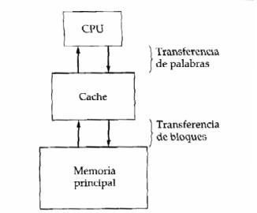
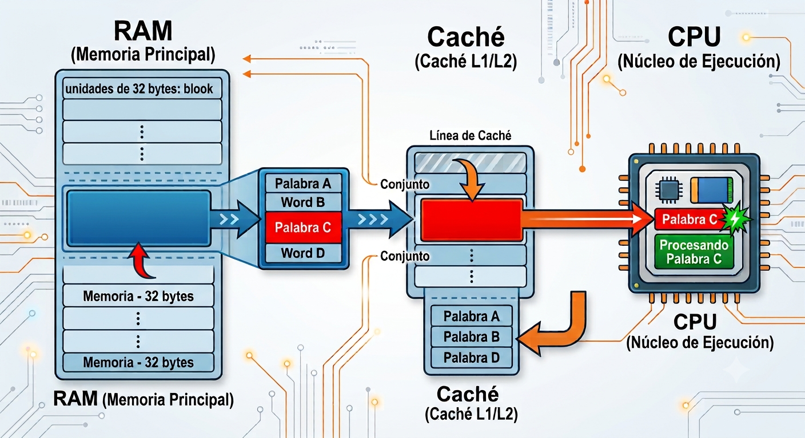

Arquitectura de Computadores
Stallings, W. (2022). Computer Organization and Architecture, 11ª Ed., Caps. 4, 5 y 6.
| 🧑💻 Integrante 1 Rompehielo & Localidad |
📐 Integrante 2 Características & Jerarquía |
Integrante 3 Principios de Caché |
Anthonny Almeida Políticas & Reto |
#+BEGINNOTES INTEGRANTE 1 — APERTURA (30 s) Saludar al público, presentar a los cuatro integrantes por nombre y su rol. Decir: "Hoy vamos a explorar por qué su laptop no explota aunque la RAM sea mil veces más lenta que el procesador. La respuesta está en la jerarquía de memoria y en la caché." Pasar a la agenda. a#+ENDNOTES
Actividad introductoria · Principio de Localidad
Integrante 1 · Stallings Cap. 4, pp. 135–138
Levanta la mano si sabes la respuesta ✋
Analogía directa de Stallings Cap. 4, p. 137 — Fig. 4.1
| Analogía | Componente real |
|---|---|
| 📋 Tu escritorio (5 carpetas) | Memoria Caché |
| 🗄️ Archivero en la sala (500) | Memoria Principal (RAM) |
| 🏛️ Biblioteca (miles) | Disco / Almacenamiento |
Pregunta al público:
📌 Si ya tienes una carpeta en el escritorio y necesitas información de ella de nuevo, ¿vas al archivero?
→ ¡No! Ya la tienes cerca. Esto es localidad temporal.
📌 Cuando vas al archivero, ¿traes también las carpetas vecinas?
→ Probablemente sí. Esto es localidad espacial.
¿Por qué ocurre?
Denning (1972) formuló 3 afirmaciones:
x fue referenciada en el
tiempo t, es probable que vuelva a ser
referenciada en un tiempo cercano a t.
for (i = 0; i < 1000; i++) {
suma += array[i]; ← variable "suma" se usa 1000 veces
}
La variable suma y el contador i son
accedidos repetidamente → alta localidad temporal.
Cómo la explota la caché:
x es referenciada en el tiempo
t, es probable que las posiciones
x−k a x+k sean referenciadas en
un futuro cercano (para un k relativamente pequeño).
for (i = 0; i < N; i++) {
resultado[i] = A[i] + B[i]; ← acceso secuencial a arrays
}
Si accedo a A[0], lo probable es que pronto
acceda a A[1], A[2]...
→ La caché trae un bloque completo de memoria.
Cómo la explota la caché:
Características de la Memoria · La Pirámide
Integrante 2 · Stallings Cap. 4, pp. 141–156
Stallings, Tabla 4.1 — p. 141 — Dimensiones clave de clasificación
Stallings p. 141 — El método determina el tiempo de acceso
Acceso en orden lineal estricto. Tiempo variable.
Ejemplo: Cinta magnética
Cabezal va a vecindad y luego busca. Tiempo variable.
Ejemplo: Disco duro (HDD)
Cada dirección tiene mecanismo propio. Tiempo constante.
Ejemplo: RAM, Caché
Búsqueda por contenido, no por dirección. Tiempo constante.
Ejemplo: Caché asociativa
¿Por qué T_C > T_A?
En memorias DRAM, la lectura es destructiva: leer un dato lo borra. El sistema debe reescribirlo antes de permitir otro acceso.
Fórmula para no-RAM (Stallings Ec. 4.1):
T_n = T_A + n/R donde n = bits a transferir
Stallings, Fig. 4.6 p. 144 — Click para construir la jerarquía de abajo hacia arriba 🔽→🔼
Stallings, Ec. 4.2 p. 151 — ¿Cuándo vale la pena la jerarquía?
T_s = H × T₁ + (1 − H) × (T₁ + T₂) = T₁ + (1 − H) × T₂Principios, Estructura, Funciones de Mapeo
Integrante 3 · Stallings Cap. 5, pp. 161–186
Terminología esencial:

Organización básica de la memoria caché
Stallings, Fig. 5.3 (p. 163) — Flujo de una lectura

Stallings p. 167 — El delicado equilibrio de capacidad [cite: 194]
¿Por qué no hacerla inmensa?
Evolución (Stallings Tab. 5.2) [cite: 201]
Stallings p. 168 — La técnica más simple
línea_caché = bloque_RAM mod m
(donde m = número de líneas en caché)
Estructura de dirección — Ejemplo 5.1a (Stallings p. 171): Caché 64kB · Bloques de 4 bytes · Mem. Principal 16MB (24 bits)
Ventajas y desventajas:
Stallings p. 173 — Máxima flexibilidad, mayor costo
Estructura de dirección — mismo ejemplo (24 bits, bloques de 4 B):
Ventajas y desventajas:
Stallings p. 176 — El compromiso óptimo · Más usado en la práctica
v
conjuntos (sets), cada uno con k líneas
(vías), un bloque mapea a un conjunto fijo
pero puede ir a cualquier línea dentro del conjunto.Dirección — Ejemplo 5.1c: 2-way set-associative (Stallings p. 178)
| Características | Mapeo Directo | Mapeo Asociativo | Asoc. por Conjuntos |
|---|---|---|---|
| Flexibilidad | Línea fija | Cualquier línea | Cualquier línea del conjunto |
| Riesgo de Thrashing | Alto | Nulo | Muy bajo |
| Costo de Hardware | Muy bajo (Simple) | Muy alto (Memoria CAM) | Equilibrado |
| Uso en el mundo real | Cachés L3 muy grandes | Cachés muy pequeñas | Estándar de la industria |
| Ejemplo (Stallings Tab. 5.2) | Intel 80486 L1 | Caché TLB | Pentium 4, IBM z13 |
Sustitución · Escritura · Reto Hit/Miss
Integrante 4 · Stallings Cap. 5, pp. 181–186
Stallings p. 181 — ¿Qué línea expulsamos cuando la caché está llena?
Expulsa la línea menos usada recientemente. Mejor hit ratio. Fácil en 2-way (1 bit USE).
⭐ Más usado
Expulsa la línea que llegó primero. Simple (buffer circular). Puede sufrir Anomalía de Bélády.
✓ Simple
Expulsa la línea con menos referencias acumuladas. Usa contador por línea.
≈ Raro
Selección aleatoria. Sorprendentemente cerca de LRU en práctica (Smith, 1982).
○ Simple hw
Stallings p. 182 — ¿Cuándo actualizamos la RAM?
Cada escritura actualiza caché Y RAM simultáneamente.
✅ RAM siempre válida
✅ Coherencia simple entre cachés
❌ Genera tráfico de bus constante
❌ Posible cuello de botella
Usado en: IBM z13 L1 y L2 (Stallings p. 190)
Escribe solo en caché. Marca línea con Dirty Bit. Escribe a RAM solo al expulsar la línea.
✅ Mínimo tráfico de bus
✅ Mejor rendimiento general
❌ RAM puede estar desactualizada
❌ Coherencia compleja
Usado en: IBM z13 L3 y L4 (Stallings p. 191)
Tamaño de Línea (Line Size)
Número y Tipo de Cachés
EJERCICIO PRÁCTICO EN VIVO — Algoritmo FIFO
⏱ 3 minutosParámetros del sistema:
¿Qué debes determinar?
Secuencia: 1 → 2 → 3 → 1 → 4 → 1 → 2 | Caché: 3 marcos vacíos | Algoritmo: FIFO
| Ref. | Marco 1 | Marco 2 | Marco 3 | Expulsado | Resultado |
|---|---|---|---|---|---|
| 1 | 1 | — | — | — | ✗ FALLO |
| 2 | 1 | 2 | — | — | ✗ FALLO |
| 3 | 1 | 2 | 3 | — | ✗ FALLO |
| 1 | 1 | 2 | 3 | — | ✓ ACIERTO |
| 4 | 4 | 2 | 3 | 1 (más antiguo) | ✗ FALLO |
| 1 | 4 | 1 | 3 | 2 (más antiguo) | ✗ FALLO |
| 2 | 4 | 1 | 2 | 3 (más antiguo) | ✗ FALLO |
Lo esencial que llevas de esta clase
[1] Stallings, W. (2022). Computer Organization and Architecture: Designing for Performance (11th ed.). Pearson. Caps. 4 (pp. 134–159), 5 (pp. 160–198)
[2] Denning, P. J. (1972). On modeling program behavior. AFIPS Spring Joint Computer Conference. — Base del Principio de Localidad
[3] Smith, A. J. (1982). Cache memories. ACM Computing Surveys, 14(3), 473–530. — Estudios de hit ratio y políticas
[4] Lascarro, C. et al. (2016). IBM z13 and IBM z13s Technical Introduction. IBM Redbooks. — Jerarquía de caché real IBM z13
Presentación generada con Emacs org-re-reveal + reveal.js 4.5 · Modo Orador: presiona S